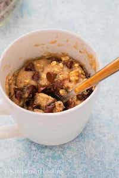

Chocolate Chip Banana Mug Muffin

Description
Make a single serving banana chocolate chip muffin in your microwave in just 90 seconds
The easiest and most delicious way to enjoy a moist cake filled with gooey chocolate chips and warm bananas fast
Ingredients
- 2 tbsp butter
- 1/2 of a banana (about 1/4 cup mashed)
- 1 1/2 tbsp of brown sugar
- 1/4 cup of all purpose flour
- 1/2 tsp baking powder
- 1/4 tsp of ground cinnamon
- 1/4 tsp of vanilla extract
- a handle of chocolate chips
- a pinch of salt
- (optional) a splash of milk if the mixture is too thick
Steps
- Melt butter in a mug for 30-60 seconds until it is just melted (start off with 30 seconds).
- Stir in mashed bananas and brown sugar
- Add flour, baking powder, ground cinnamon, vanilla extract, and salt until well combined.
- Stir in the chocolate chips. Add more on top.
- Microwave on high for 90 seconds.
- Remove from microwave and enjoy!